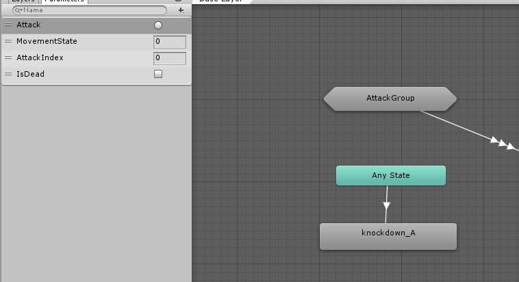
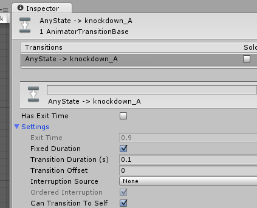

A Death animation is a different type of animation. It needs to be transitioned to once, and not return to any other transition.
Under the FightingMotionsVolume1/FBX folder, find the "knockdown_A" animation, and drag it into the Animator window. Create a Transition from Any State to the new knockdown_A state.
Under the Parameters, add a new Bool Parameter called "IsDead". Create a Transition from Any State to the new knockdown_A state, setting the Transition Condition to IsDead true.

Now Play the Animation, and and click on the IsDead Parameter. The Butcher looks like he's going into a seizure. That's because the IsDead condition is true, and stays triggered. The Any State is told to Transition to knockdown_A if that's true. This creates a loop in the Animator State Machine, where knockdown_A is calling itself over and over again.
Stop the Animation, and click on the Transition line. Under the Settings option, uncheck Can Transition to Self. This disables the Transition from triggering the same State.

Re-Play the Animation, and click on the IsDead. The Butcher falls down, and stays down.
Created with the Personal Edition of HelpNDoc: Free EPub and documentation generator